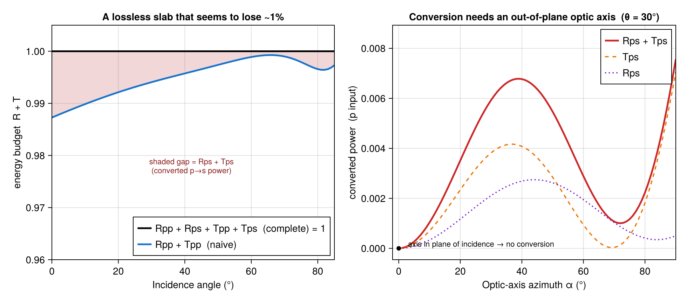

Energy budget of a rotated anisotropic slab
A lossless slab cannot absorb light, so reflectance and transmittance must add to one: $R + T = 1$. Build a uniaxial crystal whose optic axis is tilted out of the plane of incidence, though, and the obvious bookkeeping seems to break.
The naive budget comes up short
Take a calcite-like slab ($n_o = 1.658$, $n_e = 1.486$, lossless) in air and orient its optic axis out of plane with euler = (π/6, π/4, 0):
using TransferMatrix
air = Layer(λ -> 1.0, 1.0)
slab = Layer(λ -> 1.658, λ -> 1.658, λ -> 1.486, 0.5; euler = (π/6, π/4, 0.0))
r = transfer(1.0, [air, slab, air]) # normal incidence
r.Rpp + r.Tpp # ≈ 0.9978 — looks like 0.2% has vanishedThe slab is transparent, yet Rpp + Tpp ≈ 0.998. No energy is actually lost — the budget is simply incomplete.
The missing piece is polarization conversion
A rotated anisotropic crystal does something an isotropic film never does: it converts polarization. Send in a purely p‑polarized wave and a small s‑polarized component comes back, the cross‑polarized reflectance Rps. That reflected light is real, carries energy, and is exactly what the naive sum omits. Adding it closes the budget to machine precision:
r.Rpp + r.Rps + r.Tpp # = 1.0 (to ~1e-15)A few conventions make this add up cleanly:
- The coefficient is indexed
r_{in,out}, so the p‑input cross‑reflection isRps(notRsp, which is the s-input term — the two coincide only at normal incidence). Tpphere is the Poynting‑flux transmittance, which already includes the cross‑transmitted (p→s) light, so you do not also addTps.
The per‑input‑polarization statements of energy conservation are therefore
\[R_{pp} + R_{ps} + T_{pp} = 1, \qquad R_{ss} + R_{sp} + T_{ss} = 1 .\]

Panel (a) sweeps the incidence angle with the optic axis held out of plane. The naive Rpp + Tpp (blue) dips below one at every angle; the complete Rpp + Rps + Tpp (black) is flat at one. The shaded gap between them is Rps. (It pinches shut near 64° where this particular geometry happens to stop converting, then reopens — Rps is itself angle‑dependent.)
Panel (b) explains when the conversion happens. Holding the incidence angle fixed and rotating the optic axis in azimuth, Rps is exactly zero when the axis lies in the plane of incidence (α = 0): there the mirror symmetry of the problem keeps p and s decoupled, just like an isotropic medium. Tilt the axis out of that plane and the conversion — and the apparent energy "leak" — switches on.
The lesson generalizes: for any anisotropic stack, always account for the cross‑polarized channels before concluding that energy is or isn't conserved.
The full runnable script is examples/anisotropic_energy_budget.jl.